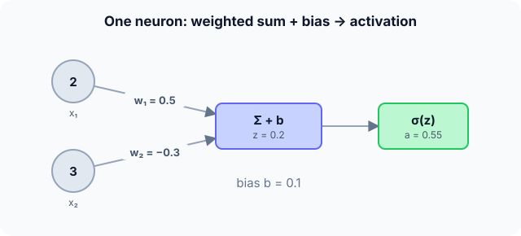

Prerequisites
- Dot product: $w \cdot x = \sum_j w_j x_j$.
- The exponential function $e^x$.
- Logistic regression: one sigmoid neuron.
The analogy
Everyday analogy
Think of a judge on a talent show listening to several advisers. Each adviser's opinion is counted with a different trust level (the weights), the judge has a personal bias, and the total is turned into a final enthusiasm score between 0 and 1.
A neuron does exactly that: weighted votes, plus a bias, squashed by an activation function.
How it works
Formula: $z = w^\top x + b$, then output $a = g(z)$ for an activation function $g$ (sigmoid, tanh, ReLU…).
Start with one neuron by hand
Inputs $x = [2, 3]$, weights $w = [0.5, -0.3]$, bias $b = 0.1$, sigmoid activation. Predict, then open "Check".
Example: predict before you read
Step 1. Compute the weighted sum $w \cdot x$.
Check
$0.5 \cdot 2 + (-0.3) \cdot 3 = 1 - 0.9 = 0.1$.
Step 2. Cover the next line and guess: add the bias. What is $z$?
Check
$z = 0.1 + 0.1 = 0.2$.
Step 3. Apply the sigmoid $1/(1 + e^{-z})$, with $e^{-0.2} \approx 0.819$.
Check
$1/1.819 \approx 0.550$.

Quick recall: Before reading further, cover the text above and say out loud: what are the two steps a neuron performs?
Check your answer
A weighted sum of the inputs plus a bias, then an activation function applied to that sum.
Finish the picture: what weights mean
Change the numbers and watch the output.
- Set $w_2 = +0.3$ instead. Predict $z$ and the output.
Check
$z = 1 + 0.9 + 0.1 = 2.0$; $\sigma(2) \approx 0.88$. A positive weight makes that input push the output up.
- Set the bias to $-1$ (original weights). Predict the output.
Check
$z = 0.1 - 1 = -0.9$; $\sigma(-0.9) \approx 0.29$. The bias shifts how easily the neuron "fires".
Quick recall: Without scrolling up, say out loud: why can't a single neuron learn XOR?
Check your answer
A single neuron draws one straight line (its boundary $z = 0$), and no single line separates the XOR cases; you need a hidden layer.
Full worked calculation
The neuron from the page, $x = [2, 3]$, $w = [0.5, -0.3]$, $b = 0.1$, computed one operation at a time, then with three activations, and finally: what happens to the output if one weight changes a little?
| Input $i$ | $x_i$ | $w_i$ | $w_i x_i$ | Meaning |
|---|---|---|---|---|
| 1 | 2 | 0.5 | 1.0 | pushes the sum up |
| 2 | 3 | −0.3 | −0.9 | pushes the sum down |
| bias | 0.1 | shifts the threshold | ||
| Sum $z$ | 0.2 |
-
1Multiply each input by its weight
$$w_1 x_1 = 0.5 \cdot 2 = 1.0, \qquad w_2 x_2 = -0.3 \cdot 3 = -0.9$$A weight is how much the neuron cares about an input, and in which direction. A positive weight says "more of this input means fire more"; a negative one says the opposite.
-
2Add them and the bias
$$z = 1.0 + (-0.9) + 0.1 = 0.2 \qquad (\text{vector form: } z = w^\top x + b)$$The two inputs almost cancel out, and the bias tips the balance slightly positive. $z$ can be any real number; it is not yet the neuron's output.
-
3Sigmoid activation
$$\sigma(0.2) = \frac{1}{1 + e^{-0.2}} = \frac{1}{1 + 0.8187} = \frac{1}{1.8187} \approx 0.5498$$The sigmoid turns $z$ into a number between 0 and 1. $z = 0$ would give exactly 0.5; our slightly positive $z$ gives slightly more than 0.5, a weak "yes".
-
4Other activations, same z
$$\tanh(0.2) \approx 0.197, \qquad \text{ReLU}(0.2) = \max(0, 0.2) = 0.2$$Tanh maps into (−1, 1) and is centred on 0. ReLU passes positive values unchanged and cuts negatives to 0. The weighted sum is identical; only the final squashing differs.
-
5How sensitive is the output?
$$\frac{d\sigma}{dz} = \sigma(z)\,(1 - \sigma(z)) = 0.5498 \cdot 0.4502 \approx 0.2475$$Near $z = 0$ the sigmoid is at its steepest: a small change in $z$ changes the output by about a quarter as much. This number is exactly what backpropagation will use.
-
6Nudge one weight
$$w_1: 0.5 \to 0.6 \;\Rightarrow\; z = 0.2 + 0.1 \cdot 2 = 0.4, \qquad \sigma(0.4) \approx 0.5987$$Changing $w_1$ by 0.1 changes $z$ by $0.1 \times x_1 = 0.2$, because the weight is multiplied by an input of 2. The output rises from 0.550 to 0.599. Learning is choosing these nudges so outputs move towards the right answers.
What the numbers tell us
A neuron computes $a = f(w^\top x + b)$: here $z = 0.2$ and $a \approx 0.55$ with the sigmoid.
Each weight's effect on $z$ is scaled by its input, which is why inputs on very different scales should be normalised before training.
The rule in plain words
Multiply each input by its weight and add them, then add the bias: $z = w^\top x + b$.
Pass $z$ through a non-linear activation $g$ to get the output $a = g(z)$. Learning means adjusting $w$ and $b$.
Quick recall: Before you read the code, describe how to compute a neuron's output, in your own words. Then check below.
Check your answer
Start from the bias, add each input times its weight, then apply the activation function to the total.
The code
Read this code after you have computed the neuron by hand. It will make more sense.
double neuron(double w[], double x[], int d, double b) { /* sigmoid neuron */
double z = b;
for (int j = 0; j < d; j++) z += w[j] * x[j]; /* weighted sum + bias */
return 1 / (1 + exp(-z)); /* activation */
}Definition
What you just did, in one line: an artificial neuron computes a weighted sum of its inputs plus a bias, $z = w^\top x + b$, and outputs $g(z)$ for a non-linear activation function $g$.
flowchart LR
X1["x1 = 2"] -->|"× 0.5"| S["sum + bias 0.1"]
X2["x2 = 3"] -->|"× -0.3"| S
S -->|"z = 0.2"| G["sigmoid"]
G -->|"a = 0.55"| OUT["output"]
Putting numbers on it
Quick recall: Before looking at the formula, predict: if all weights and the bias are 0, what does a sigmoid neuron output for any input?
Check your answer
0.5, because $\sigma(0) = 0.5$.
The neuron in one line, with our numbers:
$$a = \sigma\Big(\sum_{j} w_j x_j + b\Big) = \sigma(0.5 \cdot 2 - 0.3 \cdot 3 + 0.1) = \sigma(0.2) \approx 0.550$$| Part | Role | In our example |
|---|---|---|
| Inputs $x_j$ | Data or previous layer's outputs | 2, 3 |
| Weights $w_j$ | How much each input matters (learned) | 0.5, −0.3 |
| Bias $b$ | Shifts the threshold (learned) | 0.1 |
| Pre-activation $z$ | Weighted sum + bias | 0.2 |
| Activation $g$ | Adds non-linearity | sigmoid → 0.55 |
Warning
Without a non-linear activation, stacking neurons gains nothing: a composition of linear functions is still linear, so a deep "network" would collapse into one linear model.
Exam tip
Write the computation in two lines, $z$ then $a$, and show the numbers. Exams often add "what if the bias changes?" or "which input matters most?" (largest $|w_j x_j|$).
Common mistakes
- Forgetting the bias in $z$.
- Applying the activation to each input instead of to the sum.
- Thinking a neuron "fires" only at 1; with sigmoid the output is a graded value between 0 and 1.
Try it yourself
Exercise 1 (warm-up)
Inputs $x = [1, 1]$, weights $w = [2, -1]$, bias $b = -0.5$, sigmoid. Compute the output.
Hint
$e^{-0.5} \approx 0.607$.
Answer
$z = 2 - 1 - 0.5 = 0.5$; $a = 1/1.607 \approx 0.62$.
Exercise 2 (a bit harder)
Find weights and a bias for one neuron with a step activation (output 1 if $z \ge 0$) that computes AND of two binary inputs. Write your answer down before you open it.
Show answer
For example $w = [1, 1]$, $b = -1.5$: only $x = [1, 1]$ gives $z = 0.5 \ge 0$; the other inputs give $z \le -0.5$. A single neuron can do AND and OR, but not XOR.
Did you know?
Did you know?
McCulloch and Pitts proposed the first artificial neuron in 1943; Frank Rosenblatt built the perceptron, a trainable neuron, in hardware in 1958.
In 1969 Minsky and Papert showed that a single perceptron cannot learn XOR, which helped cause the first "AI winter" until multi-layer networks and backpropagation arrived.
Key points to remember
If you remember one thing from each line, remember the because.
- A neuron is a weighted sum plus a bias because that lets each input count with its own learned importance.
- The bias shifts the threshold because it is added before the activation.
- The activation must be non-linear because stacked linear functions stay linear.
- One neuron can't do XOR because its decision boundary is a single straight line.
- Learning adjusts $w$ and $b$ because they are the only free numbers in the neuron.
Self-check questions
Answer these in order, out loud. They follow the page, so your answers become the script of your video.
- How is a neuron like a judge listening to advisers?
Sample answer
Each adviser's opinion is weighted by trust, the judge adds a personal bias, and the total becomes a final score between 0 and 1.
- Compute the neuron output for $x = [2, 3]$, $w = [0.5, -0.3]$, $b = 0.1$ with sigmoid.
Sample answer
$z = 0.2$, output $\sigma(0.2) \approx 0.55$.
- Why does the code start
zatb?A good answer says what $z$ must contain.
Sample answer
$z$ is the weighted sum plus the bias; starting at $b$ and adding each $w_j x_j$ builds exactly that in one loop.
- So what is an artificial neuron, in one sentence?
Sample answer
A unit that computes a weighted sum of its inputs plus a bias and passes it through a non-linear activation.
- Why must the activation be non-linear?
A good answer composes two linear layers.
Sample answer
Two linear layers $W_2(W_1 x)$ equal one linear layer $(W_2 W_1) x$, so without non-linearity depth adds no power.
- What does each part of the neuron do?
Sample answer
Weights scale the inputs, the bias shifts the threshold, the sum combines them, and the activation adds non-linearity.
- Why can't a single neuron compute XOR?
Sample answer
Its boundary $w^\top x + b = 0$ is a straight line, and XOR's positive and negative cases can't be split by one line.
- If you had to teach this to a friend in 2 minutes, what would you leave out, and why?
Sample answer
I'd leave out XOR and the history. I'd keep the judge analogy, the $z = 0.2 \to 0.55$ example, and "weighted sum + bias, then activation".
External resources
- 3Blue1Brown: But what is a neural network?: the visual introduction to neurons and layers.
- Neural Networks and Deep Learning, chapter 1: Michael Nielsen's free book: perceptrons and sigmoid neurons.
- Wikipedia: Artificial neuron: history and variants.
Videos
- 3Blue1Brown: But what is a neural network?: chapter 1 of the deep learning series.